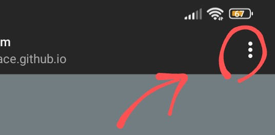
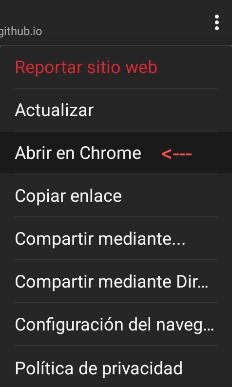

Importante:la página a la que se le es redirigirá contiene un audio y un video, si estos no se ejecutan
por algun motivó, pueden ser no compatible el navegador externo que esta usando. para evitar cualquier problema
le sugiero que lo haga desde un navegador compatible, como lo es chrome.
Seguir instrucciones
1-Apretar los 3 puntos

2-Abrir en navegador externo

3-Tras abrir en navegador externo presione el boton del final de la pagina